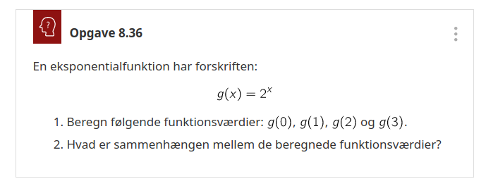
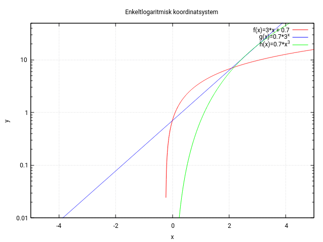

Funktioner
Matematik B & A
Jacob Debel
Funktioner generelt
Sammenhæng mellem variable
I kender det allerede:
- Regningen på energidrik afhænger af antallet af energidrik, der købes (og mærket selvfølgelig).
- Renteindtægterne i banken afhænger af pengene på bankbogen.
- Tidevand afhænger af tidspunktet på døgnet.
Fælles er:
- at en størrelse afhænger af en anden.
- men at den anden størrelse ikke afhænger af den første.
Eksempel
- Der er ikke både flod og ebbe (høj- og lavvande) på samme tid.
- Vi betaler ikke to forskellige beløb for det samme antal mælk (af samme mærke og i samme butik).
To variabeltyper
- Den uafhængige variabel
- Den I før har kaldt x.
- Værdierne kan vælges "frit".
- Den afhængige variabel
- Den I før har kaldt y og nu kommer til at kalde \(f(x)\).
- Værdien afhænger af, hvad den uafhængige værdi.
Parsammenligning
Find selv på eksempler, hvor en størrelse afhænger af en anden.
- Først i makkerpar.
- Del jeres eksempler i makkerskabsgruppen.
Funktionsbegrebet
I matematik er en funktion en matematisk sammenhæng mellem to størrelser.
Definition 1
En funktion er en sammenhæng mellem to størrelser \(x\) og \(y\), som opfylder følgende betingelse:
"Til enhver værdi af \(x\) svarer præcis en værdi af \(y\)."
Man siger i dette tilfælde, at \(y\) er en funktion af \(x\). Kaldes funktionen for \(f\), skriver man \(y=f(x)\).
En lille (sproglig) opgave

Repræsentationsformer
Typisk beskrives en matematisk funktion ved en forskrift og/eller en graf.
Forskrifter:
Hvad skal det sige inde i hovedet?
De tilhørende grafer:

Funktioner og grafer
Diskutér i makkerpar.

Lidt regning

Dm og Vm
Nej, der er hverken tale om Danmarks- eller verdensmesterskabet her.
Definition 2
Den mængde af tal, inden for hvilken den uafhængige variabel \(x\) kan variere, kaldes funktionens definitionsmængde og betegnes Dm(\(f\)).
Den mængde af tal, der udgøres af samtlige funktionsværdier, kaldes funktionens værdimængde og betegnes med Vm(\(f\)).
Hvad siger I til dette?
- Angiv, så godt I kan, Dm og Vm for hver af funktionerne, som I har set tidligere.
- Det er helt fint at spørge eller komme med kvalificerede svar. Det er jo trods alt første gang, at I arbejder med dette.
Forskrifter:
Hvad fik I?
Helt sikkert dette! :)
Gad vide, hvad det siger inde i hovedet? :)
(Lidt) nemmere
Dm og Vm - opgaver
- Note 8.5: Kan I se, at der er forskel på "bollerne" i enderne af graferne? Der er en lille forskel i deres betydning.
- Ekstra udfordring til opgave 8.6: Bestem Dm og Vm uden at tegne graferne først.

Flere opgaver


Monotoni
Definition 3
En funktion \(f\) kaldes voksende, hvis der for to vilkårlige tal \(x_1\) og \(x_2\) i definitionsmængden gælder, at
\[\text{hvis } x_1 < x_2, \text{ så er } f(x_1) < f(x_2)\,.\]
En funktion \(f\) kaldes aftagende, hvis der for to vilkårlige tal \(x_1\) og \(x_2\) i definitionsmængden gælder, at
\[\text{hvis } x_1 < x_2, \text{ så er } f(x_1) > f(x_2)\,.\]
En funktion, der enten er voksende eller aftagende, kaldes under ét monoton.
Definition 4
Et monotoniinterval for en funktion \(f\) er et størst muligt interval i definitionsmængden for \(f\), hvor \(f\) er mononton.
- Når noget er monotont, er det ensformigt.
- En funktion er monoton, når den er voksende eller aftagende i hele sin Dm.
- En funktion, som hverken vokser eller aftager, er konstant.
- En funktion kan skifte mellem at være voksende og aftagende. Man fastlægger dens monotoniforhold.
Lidt eksempler


Maks, min - ekstremum

Definition 5
- Funktionen \(f\) har lokalt maksimum i punktet \(M(x_0, f(x_0))\), hvis \(f(x) < f(x_0)\) for alle \(x\) i nærheden af \(x_0\).
- Funktionen \(f\) har lokalt minimum i punktet \(m(x_1, f(x_1))\), hvis \(f(x) > f(x_1)\) for alle \(x\) i nærheden af \(x_1\).
- Et ekstremumspunkt er enten er minimumspunkt eller et maksimumspunkt.
- Hedder også et ekstremum i ental og ekstrama i flertal.
- Der er både globale og lokale ekstremumspunkter.
Definition 6
- Funktionen \(f\) har globalt maksimum i punktet \(M(x_0,f(x_0))\), når \(f(x_0)\) er den største værdi, funktionen antager.
- Funktionen \(f\) har globalt minimum i punktet \(m(x_1,f(x_1))\), når \(f(x_1)\) er den mindste værdi, funktionen antager.
Eksempel
- Lokalt og globalt minimum: \((3\,,\, -13.5)\)
- Lokalt maksimum: \((-2\,,\,7.33)\)
- Globalt maksimum: \((6\,,\,18)\)
- Funktionens monotoniforhold:
- \(f\) er voksende i intervallerne \(-3 \leq x \leq -2\) og \(3\leq x \leq 6\)
- \(f\) er aftagende i intervallet \(-2 \leq x \leq 3\)
- \(Vm(f) = \left\{ f \in \mathbb{R} | -13.5 \leq f \leq 18 \right\}\)
Angiv lige det hele med intervalklammer.
Opgaver


Lidt elementære funktioner
Reciprokfunktionen og hyperbler
Reciprok
- Hvis produktet af to tal er 1, er de to tal reciprokke.
- Den reciprokke værdi af et tal er 1 delt med tallet.
- Grafen kaldes en ligesidet hyperbel.
\[f(x) = \frac{1}{x} \text{ for } x \neq 0\,. \quad (Reciprokfunktionen)\]

Omvendt proportionalitet
Definition 7
To størrelser \(x\) og \(y\) kaldes omvendt proportionale, hvis deres produkt er konstant:
\[x y = k\,.\]
Skrives \(y\) som en funktion af \(x\), haves regneforskriften
\[y=f(x) = \frac{k}{x}\,.\]
Grafen for \(f\) kaldes en hyperbel.
Eksempel
- Fra fysik kendes bølgeligningen. Særligt for lys gælder at
\[c = \lambda \cdot f\,,\]
- Bølgelængden \(\lambda\) og frekvensen \(f\) er omvendt proportionale, da lysets hastighed i vakuum er en konstant.
- Hvis frekvensen bliver større, bliver bølgelængden kortere.
Forskudt hyperbel
"Simple" opgaver

\(x^2\) og \(\sqrt{x}\)
Et billede siger mere end 1000 ord.

Opgaver

Regning med funktioner
- Givet to funktioner \(f(x)\) og \(g(x)\) kan man danne nogle nye funktioner vha. de simple regneoperationer.
- Men hvad f***** skal det betyde?
- Giv mig nogle eksempler på funktioner, så ser vi på det sammen!
Opgaver


Sammensatte funktioner

Det grundlæggende
- Hvis man har flere funktioner, kan man sætte dem ind i hinanden, og så har man…
- drum roll!
- sammensatte funktioner!
F.eks. \[f(x)= x^2 \quad,\quad g(x)=\sin(x) \quad,\quad h(x)=10^x\]
Kan blive til
\begin{align*} f(g(x))&= \left( \sin(x) \right)^2 \\ h(f(x))&= 10^{\left(x^2\right)} \end{align*}
mens
\begin{align*} g(f(x))&= \sin \left(x^2 \right) \\ f(h(x))&= \left( 10^x \right)^2 \end{align*}
- OBS: Værdimængden for den indre funktion, skal være en del af definitionsmængden for den ydre funktion!
- Følgende notationsform kan også bruges: \[f(g(x)) = f \circ g (x) \text{ og } g(f(x)) = g \circ f (x)\,.\]
Opgaver


Inverse funktioner
Aka omvendte funktioner
- En funktion og dennes omvendte funktion ophæver hinanden.
- "Sætte i anden" og "uddrage kvadratroden" er modsat hinanden.
Definition 8
En omvendt funktion til \(f\) er en funktion \(f^{-1}\), der virker modsat \(f\):
\[f \circ g f^{-1} (x) = x \text{ og } f^{-1} \circ f(x) = x\,.\]
Men, men, men
- Kun injektive funktioner har omvendte funktioner.

Sætning 1
En monoton funktion har en omvendt funktion.
Bisurin!?
Bijektiv
"For ethvert \(y\) er der præcis et \(x\)."
Surjektiv
"For ethvert \(y\) er der mindst ét \(x\)."
Injektiv
"For ethvert \(y\) er der højst ét \(x\)."

En bijektiv funktioner er både surjektiv og injektiv.
Hvad er hvad?
- En funktion \(f: A \to B\) knytter til hvert element \(x\in A\) et entydigt element \(f(x) \in B\).
- \(A\) kaldes definitionsmængden (domænet) for \(f\).
- \(B\) kaldes codomænet for \(f\).
- \(f(A) = \left\{ f(x) \vert x \in A\right\}\) kaldes værdimængden af \(f\).
- \(B\) kan altså være en større mængde end værdimængden \(f\).
- \(A = B = [0,1]\) for alle tre viste funktioner.
Hvilken bijektiv, surjektiv og injektiv?
Oda, hjælp os!
"Lille spejl på væggen der…"
Sætning 2
Grafen for \(f\) og grafen for \(f^{-1}\) er hinandens spejlbilleder i linjen med ligningen \(y=x\).
Tegning før regning
Og så til regning
Metode til at bestemme \(f^{-1}\)
Man finder forskriften for den omvendte funktion \(f^{-1}\) til \(f\), når man
- isolerer \(x\) i ligningen \(y=f(x)\): \[y=f(x) \iff x = f^{-1}(x)\]
- ombytter \(x\) og \(y\): \[x=f^{-1}(y) \leftrightarrow y = f^{-1}(x).\]
- Prøv lige at give mig en tilfældig funktion, og så ser vi, om vi kan finde en omvendt funktion sammen.
Opgaver

Man kan godt klare 167 i hånden.

Rødder og potenser
Var der nogen, der sagde kvadratrod?
Definitioner for rødder
Definition 1
Kvadratroden af et ikke-negativt tal \(a\) er det ikke-negative tal \(b\), hvis andenpotens er \(a\), dvs. for \(a \geq 0\) gælder
\[\sqrt{a} = b \iff b^2 = a\,.\]
- Her er der krav om ikke-negative tal.
Definition 2
Kubikroden af et tal \(a\) er det tal, hvis tredjepotens er \(a\).
- Her er der ingen krav.
Definition 3
\(a>0\): \(\sqrt[n]{a}\) er det positive tal, hvis \(n\)-te potens er \(a\), dvs.
\[\sqrt[n]{a} = b \iff a = b^n\]
\(a=0\):
\[\sqrt[n]{a} = \sqrt[n]{0} = 0\]
\(a<0\): Hvis \(n\) er lige, er \(\sqrt[n]{a}\) ikke defineret. Hvis \(n\) er ulige, er \(\sqrt[n]{a}\) det negative tal, hvis \(n\)-te potens er lig med \(a\).
Talle \(n\) kaldes rodeksponenten, og \(a\) kaldes radikanden (latin: radix, rod).
Regneregler for kvadratrødder
Sætning 1
For ikke-negative tal \(a\) og \(b\) gælder
\[\sqrt{a \cdot b} = \sqrt{a}\cdot \sqrt{b} \text{ og } \sqrt{\frac{a}{b}} = \frac{\sqrt{a}}{\sqrt{b}} \,,\quad b > 0\,.\]
For alle reelle tal \(a\) gælder desuden
\[\sqrt{a^2} = \lvert a \rvert\,.\]
Opgaver

Regneregler for potenser
Specielle eksponenter
Rationel eksponent
\[a^{\frac{p}{q}} = \sqrt[q]{a^p} = \left( \sqrt[q]{a} \right)^p \\\text{for } a >0, p \text{ hel og } q \text{ hel og positiv}\]
Regneregler for potenser
Lad regn(ing)en falde

Opgaver 1


Opgaver 2

Eksponential- og logaritmefunktioner

Klassisk eksempel
Din, nu afdøde, oldemor indsatte 1000 kr på din børneopsparring, den dag du blev født.
Banken har givet 2 % i rente i al tid frem til nu, og der er blevet tilskrevet renter én gang om året.
- Hvor mange penge kan du hæve fra din børneopsparring nu?
- Hvornår kan du hæve 2000 kr fra din børneopsparring, hvis du lader alle penge stå på kontoen i mellemtiden?

- 1. spørgsmål kan behandles med hjælp af eksponentialfunktioner.
- 2. spørgsmål kan besvares med hjælp af logaritmefunktioner.
Den simple eksponentialfunktion
\[f(x) = b \cdot a^x\]
- Undersøg, hvilken betydning koefficienterne har for grafens udseende.
- Alle hjælpemidler er tilladte.
- Eksempelvis, åbn geogebra og afprøv forskellige funktioner med forskellige værdier af a og b.
Man kan også åbne sin matematikbog og bruge den. :)
I så tilfælde skal I se i mat A1 stx: kapitel 5 side 100 og frem.
Opgave

- Tillægsspørgsmål
- Hvad skal x-værdien være for at \(g(x)=8192\)?
- Hvad skal x-værdien være for at \(g(x)=100\)?
Forrige opgave kunne nemt besvares
Men Tillægsspørgsmålene var ikke lige sådan at svare på.
For at kunne svare på dem, skal man kende til logaritmefunktioner!
Logaritmefunktioner
John Napier (1550-1617)
Logaritmens historie: https://en.wikipedia.org/wiki/History_of_logarithms
10 tals-logaritmen
Definition 1
Den omvendte funktion til eksponentialfunktionen \(f(x)=10^x\) kaldes logaritmefunktionen med grundtal 10, og den betegnes \(g(x)=\log(x)\).
Defininition 2
Logaritmen til et positivt tal \(a\) er den eksponent \(b\), som 10 skal opløftes til for at give tallet \(a\):
\[\log (a) = b \text{ netop når } 10^b = a\,.\]
- Smag lige på definitionerner sammen med jeres makker. Hvad betyder det egentlig?
- Hvad skal man opløfte 10 i, for at få 100?
- Hvad skal man opløfte 10 i, for at få 1000 000?
- Hvad skal man opløfte 10 i, for at få 10?
- Hvad skal man opløfte 10 i, for at få 1?
- Hvad skal man opløfte 10 i, for at få 0.1?
10 tals-logaritmen
- En logaritmefunktion tager generelt udgangspunkt i en eksponentialfunktion.
- Hvis eksponentialfunktionen hedder \[f(x)= a^x\]
- opskrives den tilsvarende logartimefunktion som \[f^{-1}(x) = \log_a \left( x \right)\]
- For 10 tals-logaritmen ville det svare til \[f(x)=10^x \quad \text{og} \quad f^{-1} (x) = \log_{10} (x)\]
- Hvis man bare skriver \(\log(x)\) plejer vi på dansk at opfatte det som \(\log_{10}(x)\).
- Hvis man sætter en funktion sammen med sin inverse(omvendte), så skal de to funktioner gå ud med hinanden.
- \(f \left( f^{-1} (x) \right) = \boxed{10^{\left( \log(x) \right)}} = x \quad \text{og} \quad f^{-1} \left( f(x) \right) = \boxed{\log \left( 10^x \right) = x}\)
Regneregler for logaritmer
Sætning 1
For funktionerne \(\log\) og \(\ln\) gælder for alle positive tal \(a\) og \(b\) og alle tal \(x\) følgende regler:
- \(\log(a \cdot b) = \log (a) + \log (b)\)
- \(\log \left( \frac{a}{b} \right) = \log (a) - \log (b)\)
- \(\log \left( a^x \right) = x \cdot \log (a)\)
- \(\ln(a \cdot b) = \ln (a) + \ln (b)\)
- \(\ln \left( \frac{a}{b} \right) = \ln (a) - \ln (b)\)
- \(\ln \left( a^x \right) = x \cdot \ln (a)\)
(Hvad pokker er ln, tænker I nok. Hold ud. Det kommer lige om lidt. )
Bonusregel:
\[\log \left( \sqrt[n]{a^b} \right) = \log \left( a^{\frac{b}{n}} \right) = \frac{b}{n} \cdot \log(a)\]
Opgave
Løs følgende opgave vha. Team-Par-Solo

Ligninger med logaritmer
- Kan I huske: For \(g(x)=2^x\), hvilke værdier skal x have for henholdsvis at \(g(x)=8192\) og \(g(x)=100\)?
- Disse ligninger kan vi løse nu.
- Jeg løser ligningerne på tavlen.
Opgaver
I skal løse følgende ligninger vha. Parsammenligning
En hel særlig eksponential- og logaritmefunktion
\(e=2.71828182846 \dots\)
Bonusvideo
Den naturlige eksponentialfunktion
Særlige egenskaber
- Funktionsværdien til en vilkårlig x-værdi er lig
- hældningen til tangenten i samme x-værdi, som igen er lig
- integralet fra minus uendeligt til samme x-værdi
- Den eneste funktion, som har disse egenskaber.
Matematisk:

Den naturlige logaritme
Definition 3 (kapitel 3)
Den naturlige logaritme til et positivt tal \(a\) er den eksponent \(b\), som grundtallet \(e\) skal opløftes til for at give tallet \(a\):
\[\ln (a) = b \text{ netop når } e^b = a\,.\]
- Vi prøver lige igen, bare med den naturlige eksponentialfunktion og logaritme.
- Hvad skal man opløfte e i, for at få 100?
- Hvad skal man opløfte e i, for at få 1000 000?
- Hvad skal man opløfte e i, for at få 10?
- Hvad skal man opløfte e i, for at få 1?
- Hvad skal man opløfte e i, for at få 0.1?
- Hint: På en lommeregner hedder den naturlige logaritme
ln.
Sammenhæng mellem \(\log\) og \(\ln\)?
- Regnereglerne for \(\log\) og \(\ln\) er ens.
- Er der en sammenhæng mellem de to logaritmefunktioner?
- Lad os undersøge det!
Sammenhæng
- Vi ved \[e^{\ln(x)} = x = 10^{\log(x)}\]
- Lad os bare tage den naturlige logaritme alle steder, og se hvad der sker.
- Det virker altså bedst at gøre sådan noget på tavlen…
- Det endelige svar bliver \[\log(x) = \frac{\ln(x)}{\ln(10)}\]
- Nu er det jeres tur!
- Tag 10 tal-logaritmen på begge sider, og se, hvad der sker.
- I får forhåbentligt \[\ln (x) = \frac{\log(x)}{\log(e)}\]
Alle mulige logaritmer
- Det kan gøres mere generelt
Generel eksponentialfunktion og tilhørende logaritme
\begin{align*} f(x) &= a^x \\ f^{-1}(x) &= \log_a (x) \\ f(f^{-1}(x)) &= a^{\log_a (x)} = x \\ f^{-1}(f(x)) &= \log_a (a^{x}) = x \\ \log_a(x) &= \frac{\log_{10}(x)}{\log_{10}(a)} = \frac{\ln(x)}{\ln(a)} \end{align*}
Alle mulige logaritmer
Læg mærke til spejlingen af funktionerne omkring \(y=x\).
Regneregler - igen
Naturlig
Differentiation
Integration
10 tal
Differentiation
Integration
Generelt
Differentiation
Integration
Opgaver
Nogle af opgaverne er simple, mens andre blandt andet kræver omskrivning til skjulte 2.gradsligninger.
Opgave 8.42
Beregn følgende værdier: \(\log_4(5)\) og \(\log_4(20)\).
Opgave 8.44
Løs denne ligning:
\[\ln(x-1) + \log(x-1) =1\]
Opgave 8.45 - udsnit
Løs disse ligninger:
- \(\log \left( x^2 + 5\cdot x - 50 \right) =2\)
Opgave 314 - Teknisk matematik, udsnit Du skal bestemme x i følgende ligninger:
- \(2^x = 5\)
- \(2^{x+2} = 5\)
- \(10^{x-1} =12\)
- \(2^{-x} + 2^x =5\)
- \(9^x - 10 \cdot 3^x - 24 =0\)
Logaritmiske akser
\[f(x)=3x+0.7 \quad , \quad g(x)=0.7\cdot 3^x \quad , \quad h(x)=0.7\cdot x^3\]



- Hvad ser I?
- Beskriv så meget som muligt.
- Parsammenligning (Tal først i makkerpar. Bagefter sammenlignes makkerskabsgrupper)
Alt+Klikfor at zoom ind. (Ctrl+Klikpå linux)
Enkelt og dobbelt-log
Enkeltlog

Dobbeltlog
- Inddeling i dekader.
- Hver gang man går et felt op/til højre ganges der med 10.
- Hver gang man går et felt ned/til venstre divideres der med 10.
- Den samme relative ændring giver samme afstand, altså
- er der samme afstand mellem 1 og 2, som mellem 8 og 16 osv.
Håndholdt matematik - opgave
I har følgende 3 datasæt
- a: (2, 9), (4, 81), (7, 2187), (10, 59049)
- b: (2, 32.5), (5, 51.25), (7, 63.75), (10, 82.5)
- c: (1, 1000), (4, 500), (9, 333.33), (16, 250)
- I skal plotte datasættene på hhv. alm. mm-papir, enkeltlogaritmisk papir og dobbeltlogaritmisk papir. Dette skal gøres på fysisk papir i hånden.
- Afgør for hver af datasættene, om det repræsentere en lineær funktion, en potensfunktion eller en eksponentialfunktion.
Bestem forskrifter, som passer til hver af datasættene.
(I geogebra kan man anvende
fitlinje,fitpotogfitvækst)
Forskrifter for eksp og pot
Eksponentialfunktion
\[f(x)=b \cdot a^x\]
- Man skal kende 2 punkter. (x1, y1) og (x2, y2)
Potensfunktion
\[g(x) = b \cdot x^a\]
- Man skal kende 2 punkter. (x1, y1) og (x2, y2)
- Man kan bruge alle logaritmer i formlerne (log, ln, etc)
Hvor kommer formlerne fra?
Eksponentialfunktion
- Begynd med to ligninger med to ubekendte:
- Løs ligningssystemet ved at isolere b i begge ligninger, sætte de to ligninger lig hinanden og endelig isoler a.
Potensfunktion
- Begynd med to ligninger med to ubekendte:
- Løs ligningssystemet ved at isolere b i begge ligninger, sætte de to ligninger lig hinanden og endelig isoler a.
- Hvilken af dem skal jeg tage mig af, og hvilken skal I selv arbejde med?
Baggrunden for enkelt og dobbeltlog
- Hvorfor bliver en eksponentialfunktion til en ret linje i et enkeltlogaritmisk koordinatsystem?
- Hvorfor bliver en potensfunktion til en ret linje i et dobbeltlogaritmisk koordinatsystem?
- Instrukser!
- Når jeg siger buzzwordet … for anden gang, må I gå igang med opgaven. Ikke før!
- Opgave i makkerskabsgrupper.
- Først opdeling i makkerpar.
- Et spørgsmål til hvert makkerpar.
- Hvert makkerpar skal finde et svar til sit spørgsmål.
- Alle hjælpemidler er tilladte (også jeres matematikbog)
- Efterfølgende skal makkerparrene forklare svarene til spørgsmålene for det andet makkerpar i makkerskabsgruppen.
- Makkerparret med den største samlede hårlængde har spørgsmål 1 om det enkeltlogaritmiske koordinatsystem.
Aflæsning i enkeltlog
{kind=link}
Sipsippernip
Fitfitternitfitfirumfit
Fit følgende datapunkter vha hhv fitvækst og fitexp i geogebra
| x | 4 | 7 | 11 | 15 | 18 | 21 |
| y | 1147.52 | 1272.28 | 1459.97 | 1675.35 | 1857.49 | 2059.43 |
Hvad ser I?
fitvækst-> \(1000\cdot 1.035^x\)fitexp-> \(1000\cdot e^{0.0344 \cdot x}\)
2 forskellige forskrifter
\[f(x)=b \cdot a^x\]
- b: Skæring med y-aksen
- a: Fremskrivningsfaktor
- 0 < a < 1 : Aftagende eksp funktion
- a > 1: Voksende eksp funktion
- \(a=1+r\), \(r\) er den procentvise stigning
\[g(x) = b \cdot e^{k \cdot x}\]
- b: Skæring med y-aksen
- k: Vækstraten
- \(k<0\): Aftagende eksp funktion
- \(k>0\): Voksende eksp funktion
Sætning 2 (kapitel 5)
Eksponentialfunktionen med forskriften \(f(x) = b \cdot a^x\) kan omskrives til følgende form:
\[f(x) = b \cdot e^{k x}\,,\]
hvor \(k = \ln \left( a \right)\) og \(a=e^k\).
Fordobling
- Hvert makkerpar opskriver en tilfældig voksende eksponentialfunktion af typen \(f(x)=b \cdot a^x\)
- Indtegn funktionen i et koordinatsystem (enten alm eller enkeltlog)
- Vælg en tilfældig x-værdi og beregn/aflæs den tilhørende y-værdi.
- Fordobl nu y-værdien, og beregn/aflæs den tilhørende x-værdi.
- Gør det en gang til
- og en gang til.
- Sammenlign jeres resultater i makkerskabsgrupper.
- Hvilken sammenhæng mellem tallene kan I finde frem til i fællesskab?
Fordoblingskonstant
Der skulle gerne være samme afstand på x-aksen mellem hver fordobling, ligegyldigt hvor man starter henne.
Kan beregnes på følgende måder:
For \(f(x)=b\cdot a^x \quad , a>1\)
\[T_2 = \frac{\log(2)}{\log(a)} = \frac{\ln(2)}{\ln(a)}\]
For \(g(x)=b\cdot e^{k\cdot x}\quad , k>0\)
\[T_2 = \frac{\ln(2)}{k}\]
- Jeg viser den ene udledning. Den anden skal I selv klare i makkerskabsgrupper.
- Hvilken skal jeg vise for jer?
Halvering
For aftagende eksponentialfunktioner er der tale om en halveringskonstant, men ellers er princippet det samme.
For \(f(x)=b\cdot a^x \quad , 0< a <1\)
\[T_{1/2} = \frac{\log(1/2)}{\log(a)} = \frac{\ln(1/2)}{\ln(a)}\]
Eller \[T_{1/2} = - \frac{\log(2)}{\log(a)} = - \frac{\ln(2)}{\ln(a)}\]
For \(g(x)=b\cdot e^{k\cdot x}\quad , k<0\)
\[T_{1/2} = \frac{\ln(1/2)}{k}\]
Eller \[T_{1/2} = - \frac{\ln(2)}{k}\]
Det er dog de førstnævnte formler, som er nemmest at huske.
Bestemmelse af forskrifter
\(f(x)=b \cdot a^x\)
- 2 kendte punkter
- 1 kendt punkt + Fordoblings/halverings-konstant
\(g(x)=b \cdot e^{k\cdot x}\)
- 2 kendte punkter
- 1 kendt punkt + Fordoblings/halverings-konstant
Arbejd, arbejd

Forskudt eksponentiel vækst
- I har set alle eksponentialfunktioner nærme sig x-aksen.
- Men det er muligt at forskyde en eksponentialfunktion både i x- og i y-retningen.
- Hvilken betydning har a, b, c, d og k?
Plotteopgave
Plot følgende koordinater i hhv et almindeligt og et enkeltlogaritmisk koordinatsystem. Det er en god idé at bruge et regneark til det.
| x | 0 | 1 | 2 | 3 | 4 | 5 | 6 | 7 | 8 | 9 | 10 |
|---|---|---|---|---|---|---|---|---|---|---|---|
| y | 80 | 68 | 58.4 | 50.72 | 44.58 | 39.66 | 35.73 | 32.58 | 30.07 | 28.05 | 26.44 |
| x | 11 | 12 | 13 | 14 | 15 | 16 | 17 | 18 | 19 | 20 | |
| y | 25.15 | 24.12 | 23.30 | 22.64 | 22.11 | 21.69 | 21.35 | 21.08 | 20.86 | 20.69 |
- Hvad ser I?
- Prøv lige at trække den vandrette asymptote fra y-værdierne og plot igen.
- Hvad ser I nu?
- Brug jeres regneark til at bestemme en tendenslinje til jeres andet plot.
- Opstil nu en forskrift, som kan beskrive jeres oprindelige data.
Krusekaffe
Download den tilhørende datafil som en csv-fil eller en excel-fil: